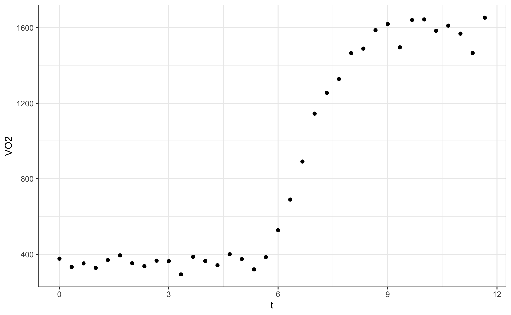
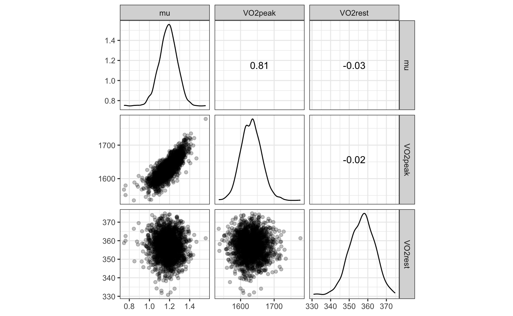
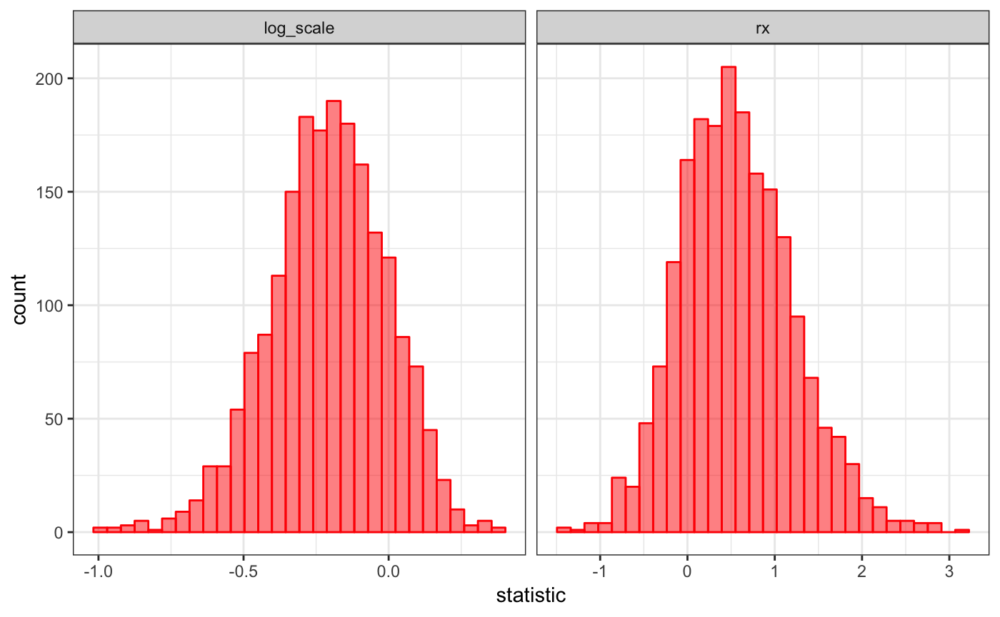
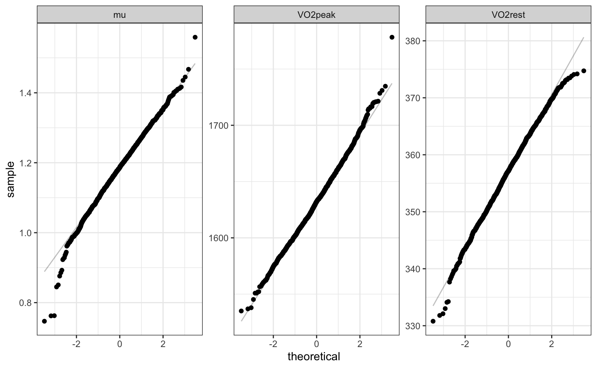

Bootstrap Confidence Intervals
Intervals.RmdThe bootstrap was originally intended for estimating confidence intervals for complex statistics whose variance properties are difficult to analytically derive. Davison and Hinkley’s Bootstrap Methods and Their Application is a great resource for these methods. rsample contains a few function to compute the most common types of intervals.
To demonstrate the computations for the different types of intervals, we’ll use a nonlinear regression example from Baty et al (2015). They showed data that monitored oxygen uptake in a patient with rest and exercise phases (in the data frame O2K).
library(tidymodels)
library(nlstools)
library(GGally)
data(O2K)
ggplot(O2K, aes(x = t, y = VO2)) +
geom_point()
The authors fit a segmented regression model where the transition point was known (this is the time when exercise commenced). Their model was:
nonlin_form <-
as.formula(
VO2 ~ (t <= 5.883) * VO2rest +
(t > 5.883) *
(VO2rest + (VO2peak - VO2rest) * (1 - exp(-(t - 5.883) / mu)))
)
# Starting values from visual inspection
start_vals <- list(VO2rest = 400, VO2peak = 1600, mu = 1)
res <- nls(nonlin_form, start = start_vals, data = O2K)
tidy(res)## # A tibble: 3 x 5
## term estimate std.error statistic p.value
## <chr> <dbl> <dbl> <dbl> <dbl>
## 1 VO2rest 357. 11.4 31.3 4.27e-26
## 2 VO2peak 1631. 21.5 75.9 1.29e-38
## 3 mu 1.19 0.0766 15.5 1.08e-16broom::tidy() returns our analysis object in a standardized way. The column names shown here are used for most types of objects and this allows us to use the results more easily.
For rsample, we’ll rely on the tidy() method to work with bootstrap estimates when we need confidence intervals. There’s an example at the end of a univariate statistic that isn’t automatically formatted with tidy().
To run our model over different bootstraps, we’ll write a function that uses the split object as input and produces a tidy data frame:
# Will be used to fit the models to different bootstrap data sets:
fit_fun <- function(split, ...) {
# We could check for convergence, make new parameters, etc.
nls(nonlin_form, data = analysis(split), ...) %>%
tidy()
}First, let’s create a set of resamples and fit separate models to each. The options apparent = TRUE will be set. This creates a final resample that is a copy of the original (unsampled) data set. This is required for some of the interval methods.
set.seed(462)
nlin_bt <-
bootstraps(O2K, times = 2000, apparent = TRUE) %>%
mutate(models = map(splits, ~ fit_fun(.x, start = start_vals)))
nlin_bt## # Bootstrap sampling with apparent sample
## # A tibble: 2,001 x 3
## splits id models
## * <list> <chr> <list>
## 1 <split [36/14]> Bootstrap0001 <tibble [3 × 5]>
## 2 <split [36/13]> Bootstrap0002 <tibble [3 × 5]>
## 3 <split [36/16]> Bootstrap0003 <tibble [3 × 5]>
## 4 <split [36/12]> Bootstrap0004 <tibble [3 × 5]>
## 5 <split [36/16]> Bootstrap0005 <tibble [3 × 5]>
## 6 <split [36/13]> Bootstrap0006 <tibble [3 × 5]>
## 7 <split [36/15]> Bootstrap0007 <tibble [3 × 5]>
## 8 <split [36/16]> Bootstrap0008 <tibble [3 × 5]>
## 9 <split [36/11]> Bootstrap0009 <tibble [3 × 5]>
## 10 <split [36/13]> Bootstrap0010 <tibble [3 × 5]>
## # … with 1,991 more rows## # A tibble: 3 x 5
## term estimate std.error statistic p.value
## <chr> <dbl> <dbl> <dbl> <dbl>
## 1 VO2rest 359. 10.7 33.5 4.59e-27
## 2 VO2peak 1656. 31.1 53.3 1.39e-33
## 3 mu 1.23 0.113 10.9 2.01e-12Let’s look at the data and see if there any outliers or aberrant results:
nls_coef <-
nlin_bt %>%
dplyr::select(-splits) %>%
# Turn it into a tibble by stacking the `models` col
unnest() %>%
# Get rid of unneeded columns
dplyr::select(id, term, estimate)
head(nls_coef)## # A tibble: 6 x 3
## id term estimate
## <chr> <chr> <dbl>
## 1 Bootstrap0001 VO2rest 359.
## 2 Bootstrap0001 VO2peak 1656.
## 3 Bootstrap0001 mu 1.23
## 4 Bootstrap0002 VO2rest 358.
## 5 Bootstrap0002 VO2peak 1662.
## 6 Bootstrap0002 mu 1.26Now let’s create a scatterplot matrix:
nls_coef %>%
# Put different parameters in columns
tidyr::spread(term, estimate) %>%
# Keep only numeric columns
dplyr::select(-id) %>%
ggscatmat(alpha = .25)
One potential outlier on the right for VO2peak but we’ll leave it in.
The univariate distributions are:
nls_coef %>%
ggplot(aes(x = estimate)) +
geom_histogram(bins = 20, col = "white") +
facet_wrap(~ term, scales = "free_x")
Percentile intervals
The most basic type of interval uses percentiles of the resampling distribution. To get the percentile intervals, the rset object is passed as the first argument and the second argument is the list column of tidy results:
## # A tibble: 3 x 6
## term .lower .estimate .upper .alpha .method
## <chr> <dbl> <dbl> <dbl> <dbl> <chr>
## 1 mu 1.00 1.18 1.35 0.05 percentile
## 2 VO2peak 1576. 1632. 1694. 0.05 percentile
## 3 VO2rest 344. 357. 370. 0.05 percentileWhen overlaid with the univariate distributions:
nls_coef %>%
ggplot(aes(x = estimate)) +
geom_histogram(bins = 20, col = "white") +
facet_wrap(~ term, scales = "free_x") +
geom_vline(data = p_ints, aes(xintercept = .lower), col = "red") +
geom_vline(data = p_ints, aes(xintercept = .upper), col = "red")
How do these intervals compare to the parametric asymptotic values?
parametric <-
tidy(res, conf.int = TRUE) %>%
dplyr::select(
term,
.lower = conf.low,
.estimate = estimate,
.upper = conf.high
) %>%
mutate(
.alpha = 0.05,
.method = "parametric"
)
intervals <-
bind_rows(parametric, p_ints) %>%
arrange(term, .method)
intervals %>% split(intervals$term)## $mu
## # A tibble: 2 x 6
## term .lower .estimate .upper .alpha .method
## <chr> <dbl> <dbl> <dbl> <dbl> <chr>
## 1 mu 1.05 1.19 1.34 0.05 parametric
## 2 mu 1.00 1.18 1.35 0.05 percentile
##
## $VO2peak
## # A tibble: 2 x 6
## term .lower .estimate .upper .alpha .method
## <chr> <dbl> <dbl> <dbl> <dbl> <chr>
## 1 VO2peak 1590. 1631. 1675. 0.05 parametric
## 2 VO2peak 1576. 1632. 1694. 0.05 percentile
##
## $VO2rest
## # A tibble: 2 x 6
## term .lower .estimate .upper .alpha .method
## <chr> <dbl> <dbl> <dbl> <dbl> <chr>
## 1 VO2rest 334. 357. 380. 0.05 parametric
## 2 VO2rest 344. 357. 370. 0.05 percentileThe percentile intervals are wider than the parametric intervals (which assume asymptotic normality). Do the estimates appear to be normally distributed? We can look at quantile-quantile plots:
nls_coef %>%
ggplot(aes(sample = estimate)) +
stat_qq() +
stat_qq_line(alpha = .25) +
facet_wrap(~ term, scales = "free") 
t-intervals
Bootstrap t-intervals are estimated by computing intermediate statistics that are t-like in structure. To use these, we require the estimated variance for each individual resampled estimate. In our example, this comes along with the fitted model object. We can extract the standard errors of the parameters. Luckily, most tidy() provide this in a column named std.error.
The arguments for these intervals are the same:
t_stats <- int_t(nlin_bt, models)
intervals <-
bind_rows(intervals, t_stats) %>%
arrange(term, .method)
intervals %>% split(intervals$term)## $mu
## # A tibble: 3 x 6
## term .lower .estimate .upper .alpha .method
## <chr> <dbl> <dbl> <dbl> <dbl> <chr>
## 1 mu 1.05 1.19 1.34 0.05 parametric
## 2 mu 1.00 1.18 1.35 0.05 percentile
## 3 mu 1.000 1.18 1.35 0.05 student-t
##
## $VO2peak
## # A tibble: 3 x 6
## term .lower .estimate .upper .alpha .method
## <chr> <dbl> <dbl> <dbl> <dbl> <chr>
## 1 VO2peak 1590. 1631. 1675. 0.05 parametric
## 2 VO2peak 1576. 1632. 1694. 0.05 percentile
## 3 VO2peak 1568. 1632. 1691. 0.05 student-t
##
## $VO2rest
## # A tibble: 3 x 6
## term .lower .estimate .upper .alpha .method
## <chr> <dbl> <dbl> <dbl> <dbl> <chr>
## 1 VO2rest 334. 357. 380. 0.05 parametric
## 2 VO2rest 344. 357. 370. 0.05 percentile
## 3 VO2rest 342. 357. 370. 0.05 student-tBias-corrected and accelerated intervals
For bias-corrected and accelerated (BCa) intervals, an additional argument is required. The .fn argument is a function that computes the statistic of interest. The first argument should be for the rsplit object and other arguments can be passed in using the ellipses.
These intervals use an internal leave-one-out resample to compute the Jackknife statistic and will recompute the statistic for every bootstrap resample. If the statistic is expensive to compute, this may take some time. For those calculations, we use the furrr package so these can be computed in parallel if you have set up a parallel processing plan (see ?future::plan).
The user-facing function takes an argument for the function and the ellipses.
bias_corr <- int_bca(nlin_bt, models, .fn = fit_fun, start = start_vals)
intervals <-
bind_rows(intervals, bias_corr) %>%
arrange(term, .method)
intervals %>% split(intervals$term)## $mu
## # A tibble: 4 x 6
## term .lower .estimate .upper .alpha .method
## <chr> <dbl> <dbl> <dbl> <dbl> <chr>
## 1 mu 0.996 1.18 1.34 0.05 BCa
## 2 mu 1.05 1.19 1.34 0.05 parametric
## 3 mu 1.00 1.18 1.35 0.05 percentile
## 4 mu 1.000 1.18 1.35 0.05 student-t
##
## $VO2peak
## # A tibble: 4 x 6
## term .lower .estimate .upper .alpha .method
## <chr> <dbl> <dbl> <dbl> <dbl> <chr>
## 1 VO2peak 1561. 1632. 1680. 0.05 BCa
## 2 VO2peak 1590. 1631. 1675. 0.05 parametric
## 3 VO2peak 1576. 1632. 1694. 0.05 percentile
## 4 VO2peak 1568. 1632. 1691. 0.05 student-t
##
## $VO2rest
## # A tibble: 4 x 6
## term .lower .estimate .upper .alpha .method
## <chr> <dbl> <dbl> <dbl> <dbl> <chr>
## 1 VO2rest 343. 357. 368. 0.05 BCa
## 2 VO2rest 334. 357. 380. 0.05 parametric
## 3 VO2rest 344. 357. 370. 0.05 percentile
## 4 VO2rest 342. 357. 370. 0.05 student-tNo existing tidy method
In this case, your function can emulate the minimum results:
- a character column called
term, - a numeric column called
estimate, and, optionally, - a numeric column called
std.error.
The last column is only needed for int_t.
Suppose we just want to estimate the fold-increase in the outcome between the 90th and 10th percentiles over the course of the experiment. Our function might look like:
fold_incr <- function(split, ...) {
dat <- analysis(split)
quants <- quantile(dat$VO2, probs = c(.1, .9))
tibble(
term = "fold increase",
estimate = unname(quants[2]/quants[1]),
# We don't know the analytical formula for this
std.error = NA_real_
)
}Everything else works the same as before:
## # A tibble: 1 x 6
## term .lower .estimate .upper .alpha .method
## <chr> <dbl> <dbl> <dbl> <dbl> <chr>
## 1 fold increase 4.42 4.76 5.05 0.05 percentile## # A tibble: 1 x 6
## term .lower .estimate .upper .alpha .method
## <chr> <dbl> <dbl> <dbl> <dbl> <chr>
## 1 fold increase 4.53 4.76 5.36 0.05 BCa